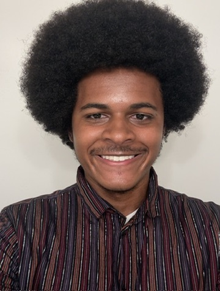

Make it understandable
Good software should explain itself. I favor clear interfaces, readable code, and decisions a teammate can follow later.
About / Zack Roland
I’m a Mathematics and Computer Science graduate with an interest in front-end engineering, software systems, and machine learning. I care about how things work, but just as much about whether they make sense to the people using them.

How I work
I’m at my best when a problem needs both careful reasoning and a practical path forward.
Good software should explain itself. I favor clear interfaces, readable code, and decisions a teammate can follow later.
I pay attention to responsive behavior, accessibility, edge cases, and the small interactions that shape trust.
I prefer maintainable foundations over quick fixes, while staying pragmatic about the needs of the current release.
The through line
Mathematics trained me to sit with difficult problems, question assumptions, and work carefully from first principles. Computer science gave me a way to turn that thinking into something other people can actually use.
That combination still guides how I build: understand the system, reduce unnecessary complexity, and keep the human experience in view.
HTML, CSS, JavaScript, responsive UI, accessibility
Python, Java, C, algorithms, software design
Pandas, NumPy, data analysis, machine-learning foundations
Git, GitHub, Figma, MATLAB, iterative prototyping
Away from the keyboard
I grew up in Anaheim in a lively family, including a twin sister. I’m a cat person, an occasional artist, and someone who enjoys learning how people make things—whether that’s software, visual design, or something entirely unrelated to tech.
What’s next